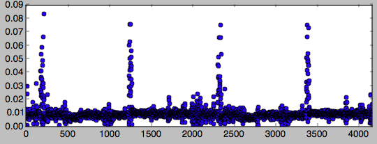

NOAA-18 sends an FM signal at 137.9125 MHz containing a radar image encoded on a 256 levels AM signal.
The goal of this project is to use an RTL-SDR and homemade antenna and extract the image with only my own software.
Currently only a part of the demodulator is made, we can see the 909 points long line, with the synchronization information being the higher levels.

The current code is on github.